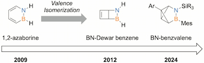
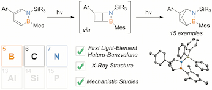
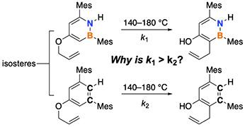
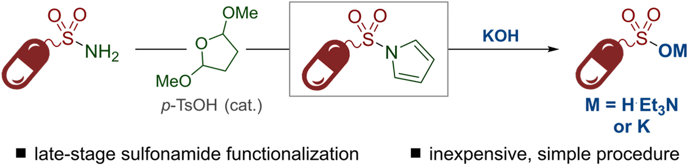
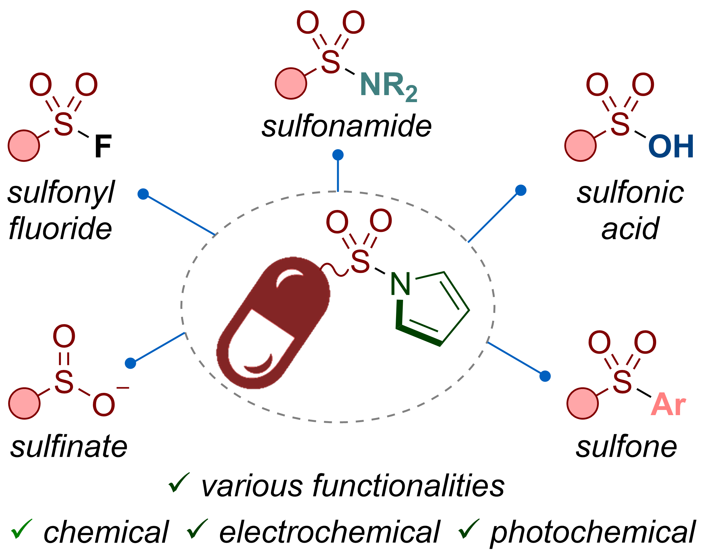
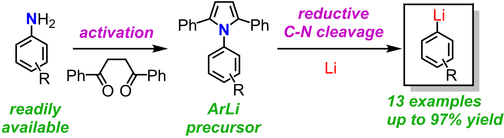

Tomoya Ozaki @

Ozaki, T.; Liu, S.-Y. [Chem. Eur. J. 2024, e202402544]
*Contribution as a response to an editorial invitation by the Editor-in-Chief.
Ozaki, T.; Bentley, S.; Rybansky, N.; Li, B.; Liu, S.-Y. [J. Am. Chem. Soc. 2024, 146, 24748–24753.]
* Selected for a Supplementary Journal Cover - [link]
* Highlighted in SYNFACTS 2024, 20(12), 1260 - [link]
Robichaud, H. M.; Ishibashi, J. S. A.; Ozaki, T.; Lamine, W.; Miqueu., K.; Liu, S.-Y. [Org. Biomol. Chem. 2023, 21, 3778-3783]
* Invited as part of the special issue "Celebrating the 20th anniversary of Organic and Biomolecular Chemistry".
Ozaki, T.; Yorimitsu, H.; Perry, G. J. P. [Tetrahedron 2022, 117-118, 132830]
* Highlighted in SYNFACTS 2022, 18(09), 0956 - [link]
Ozaki, T.; Yorimitsu, H.; Perry, G, J, P. [Chem. Eur. J. 2021, 27, 15387–15391.]
Ozaki, T.; Kaga, A.; Saito, H.; Yorimitsu, H. [Synthesis 2021, 53, 3019-3028.]
